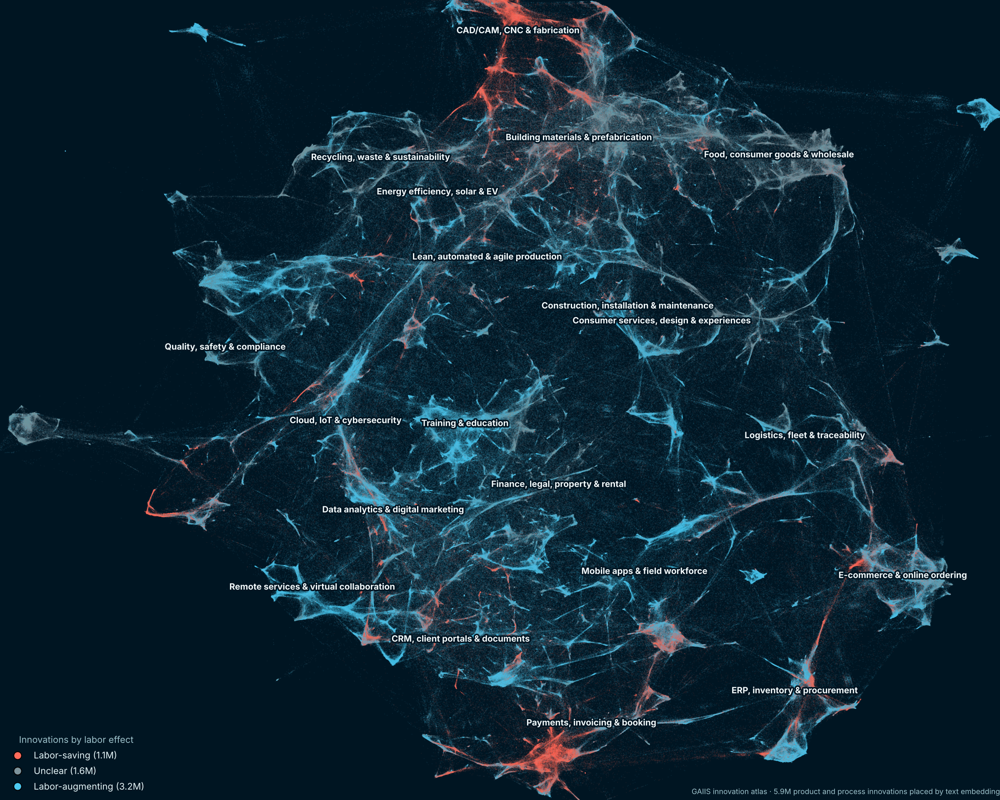

Concept
Can we do business surveys with LLMs?
Much of the research in economics and business studies needs data on firms, and gathering that data can be difficult. But a great deal of information about firms has been collected by the builders of large language models, and much of it is now encoded in the models themselves. To make it accessible for research, we need to prompt LLMs systematically.
Surveys
Global AI Innovation Survey GAIIS
Click to read more
Surveys
Global AI Innovation Survey GAIIS
Click to read more
Read the CEP Discussion Paper → Explore the innovation atlas (GAIISia) →
Patents capture only a small fraction of innovation, and firm surveys are costly, so only small samples of firms are ever asked. Yet information on firms' new products and processes is everywhere: company websites, news reports, online forums, social media. Frontier large language models have already absorbed much of it in training, so GAIIS runs an innovation survey through LLM prompts.
Is it just AI slop? No. Using cross-fitting (no firm is scored by a model that saw its own data), the innovation text predicts productivity beyond inputs, patents and country×sector effects: +1 SD in product innovation is associated with about 5% higher TFP (about 2.5% for process innovation).
- ~40% of firms show product and over 25% process innovation, against fewer than 4% that patent.
- 14% have green product and 12% green process innovation, against under 1% with a green patent.
- Labor-augmenting innovation is about 3× as common as labor-saving for products, 2× for processes.
- Countries with greener innovation also tilt more towards labor-augmenting innovation.

Paper: CEP Discussion Paper · Data for researchers: GAIIS innobase on Hugging Face (gated; request access with your name and affiliation).
Tools
Explore the data
Click to see the tools
Tools
Explore the data
Click to see the tools
Team
Who we are
Click to see the team
Team
Who we are
Click to see the team
- Prashant GargBocconi University
- Peter John LambertCentre for Economic Performance, LSE & University of Warwick
- Ralf MartinImperial College London & Centre for Economic Performance, LSE
- Denis MedvedevWorld Bank